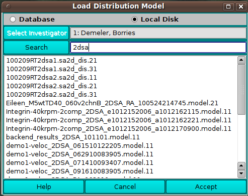

Manual
Manual
Manual
Manual
A number of UltraScan III applications load model distribution data for processing. These applications use the US_ModelLoader dialog class to allow the user to choose the model(s).
The dialog presented when a US_ModelLoader is executed allows a list of model choices from local disk or from the database. A Search button and text field allow the list to be pared down to those of interest. After a model or set of models is selected in the list, an Accept button passes model data to the caller.
|
 |
|
Text you enter in the search field limits the models listed to those that match the implied criteria. In the simpliest and most common case, a string entered pares down the list to models whose description contains the given phrase without regard to case. For example, a search field of "mc" results in models with "mc", "MC", "Mc", or "mC" in their descriptions.
The search field "=edit" results in only models that derive from a specific edited data set. This facility applies in applications that preceed the model loader dialog with an edited velocity data set loader dialog.
Another special field - "=s" - designates that Monte Carlo model sets normally presented as a composite model be separated out into each of the single models comprising the group. Use of this field should rarely be needed and be limited to advanced or developer users. If used, it may be combined with other fields. So, entries like "=s demo1", "demo1=s", "=edit=s" can be used to specify "single MC models" as well as a description filter on the list.